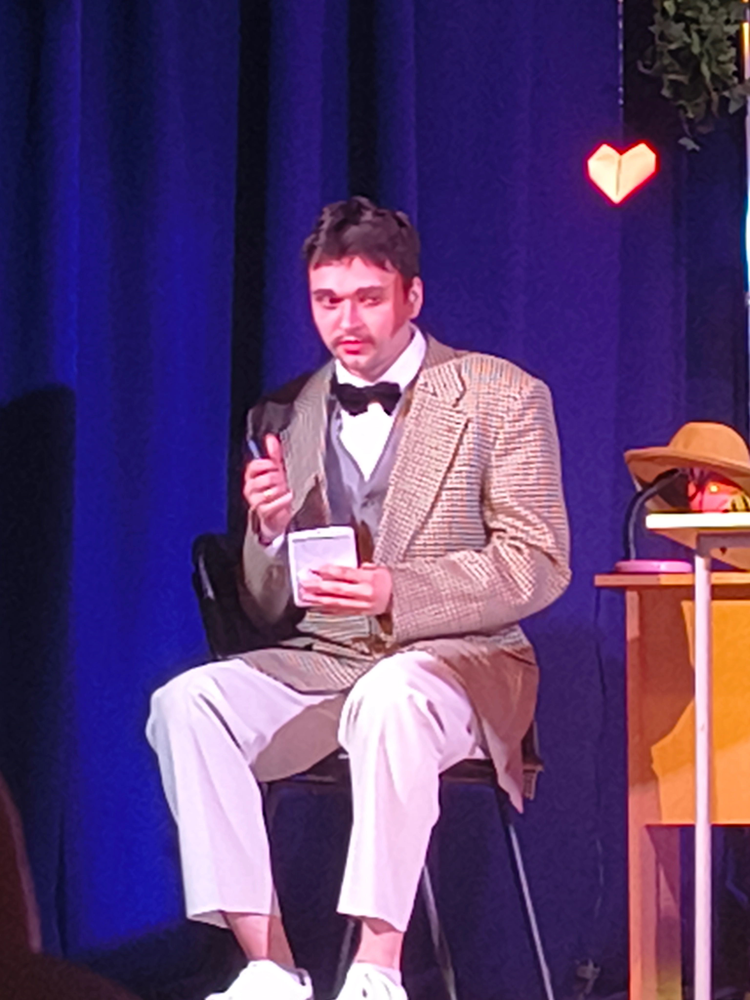

Процес створення вистави — це завжди балансування на межі реальності та вимислу. Сьогоднішня репетиція стала тому найкращим підтвердженням.
«Театр починається не з вішалки, а з того моменту, коли актор забуває, де закінчується він і починається його персонаж».
Під час розбору сцени в кабінеті психолога, наш головний герой настільки захопився аналізом ситуації, що мимохідь почав "діагностувати" колег по сцені. Курйоз у тому, що його висновки виявилися напрочуд влучними!


Чому це важливо?
Такі моменти щирості дозволяють знайти ті самі "живі" інтонації, які глядач потім відчує в залі. Ми не просто вчимо текст — ми проживаємо кожен випадок, як свій власний.
Чекаємо на вас на прем'єрі, щоб ви самі могли побачити результат цих пошуків. Кожен квиток — це ваш внесок у розвиток незалежного театру.